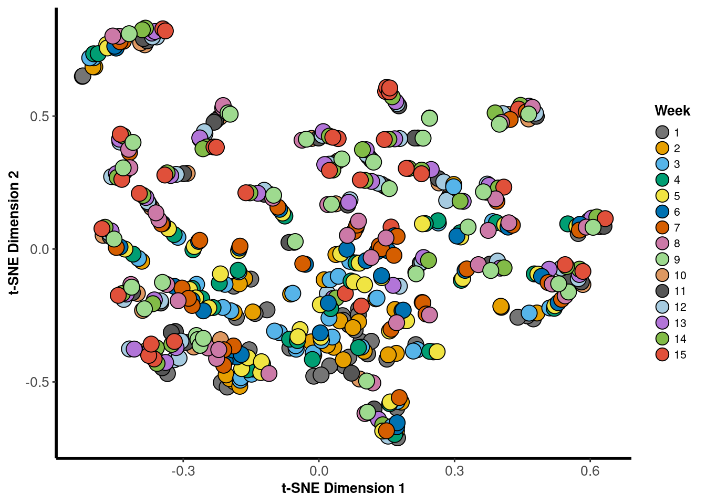
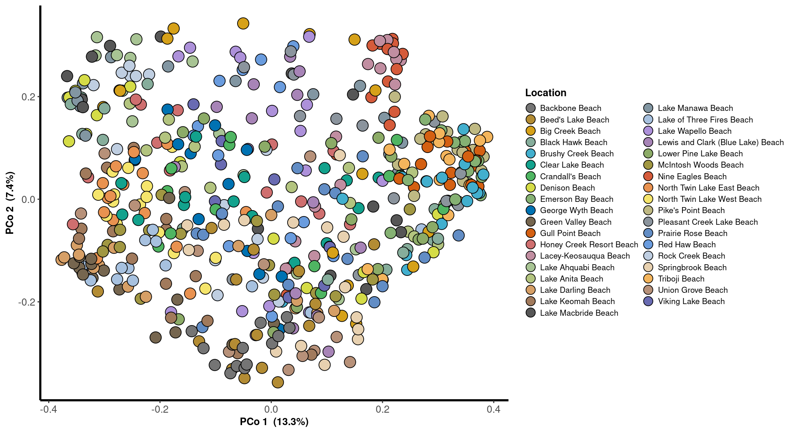

Ordination
2018
PCoA
Lake
phylosmith::pcoa_phyloseq(phylosmith::taxa_filter(lake_po, treatment = "Year", subset = "2018"), "Location", circle = FALSE)
Week
phylosmith::pcoa_phyloseq(phylosmith::taxa_filter(lake_po, treatment = "Year", subset = "2018"), "Week", circle = FALSE)
Risk Level
phylosmith::pcoa_phyloseq(phylosmith::taxa_filter(lake_po, treatment = "Year", subset = "2018"), "Risk", circle = FALSE)
NMDS
Lake
nmds <- phylosmith::nmds_phyloseq(phylosmith::taxa_filter(lake_po, treatment = "Year", subset = "2018"), "Location", circle = FALSE)## Run 0 stress 0.151933
## Run 1 stress 0.1525131
## Run 2 stress 0.1541581
## Run 3 stress 0.1537439
## Run 4 stress 0.1543822
## Run 5 stress 0.1529752
## Run 6 stress 0.1539033
## Run 7 stress 0.1524803
## Run 8 stress 0.1524691
## Run 9 stress 0.156274
## Run 10 stress 0.1531107
## Run 11 stress 0.1523738
## ... Procrustes: rmse 0.02352376 max resid 0.1185805
## Run 12 stress 0.1525162
## Run 13 stress 0.1522811
## ... Procrustes: rmse 0.02364122 max resid 0.1185396
## Run 14 stress 0.1521263
## ... Procrustes: rmse 0.01099748 max resid 0.08932315
## Run 15 stress 0.1521229
## ... Procrustes: rmse 0.01106651 max resid 0.0894655
## Run 16 stress 0.1541448
## Run 17 stress 0.1523945
## ... Procrustes: rmse 0.02343261 max resid 0.1179249
## Run 18 stress 0.1525441
## Run 19 stress 0.1525876
## Run 20 stress 0.1571138
## Run 21 stress 0.1534623
## Run 22 stress 0.1531418
## Run 23 stress 0.1532976
## Run 24 stress 0.1524987
## Run 25 stress 0.1534451
## Run 26 stress 0.1528236
## Run 27 stress 0.1530502
## Run 28 stress 0.1530396
## Run 29 stress 0.1525232
## Run 30 stress 0.1522038
## ... Procrustes: rmse 0.009680814 max resid 0.07821445
## Run 31 stress 0.1523551
## ... Procrustes: rmse 0.02279478 max resid 0.1158828
## Run 32 stress 0.1538622
## Run 33 stress 0.1529138
## Run 34 stress 0.1541529
## Run 35 stress 0.1526127
## Run 36 stress 0.1536637
## Run 37 stress 0.1537292
## Run 38 stress 0.1534722
## Run 39 stress 0.1537211
## Run 40 stress 0.1540103
## Run 41 stress 0.1539096
## Run 42 stress 0.1542074
## Run 43 stress 0.1541728
## Run 44 stress 0.1544498
## Run 45 stress 0.1546804
## Run 46 stress 0.1528543
## Run 47 stress 0.1532268
## Run 48 stress 0.152742
## Run 49 stress 0.1531335
## Run 50 stress 0.1524454
## Run 51 stress 0.1533376
## Run 52 stress 0.1529329
## Run 53 stress 0.153197
## Run 54 stress 0.1528575
## Run 55 stress 0.1547209
## Run 56 stress 0.1538105
## Run 57 stress 0.1528112
## Run 58 stress 0.1531398
## Run 59 stress 0.1537939
## Run 60 stress 0.152538
## Run 61 stress 0.1525608
## Run 62 stress 0.1522999
## ... Procrustes: rmse 0.01437871 max resid 0.1080559
## Run 63 stress 0.1533521
## Run 64 stress 0.152749
## Run 65 stress 0.1538311
## Run 66 stress 0.1518504
## ... New best solution
## ... Procrustes: rmse 0.004595769 max resid 0.04276453
## Run 67 stress 0.1528888
## Run 68 stress 0.1525851
## Run 69 stress 0.1551565
## Run 70 stress 0.1531595
## Run 71 stress 0.1536531
## Run 72 stress 0.1533147
## Run 73 stress 0.1528983
## Run 74 stress 0.1532212
## Run 75 stress 0.1546391
## Run 76 stress 0.1539481
## Run 77 stress 0.1534821
## Run 78 stress 0.1538148
## Run 79 stress 0.1535469
## Run 80 stress 0.1531098
## Run 81 stress 0.1530937
## Run 82 stress 0.1532387
## Run 83 stress 0.1530999
## Run 84 stress 0.1523223
## ... Procrustes: rmse 0.02229164 max resid 0.1174849
## Run 85 stress 0.1526297
## Run 86 stress 0.1531419
## Run 87 stress 0.1529413
## Run 88 stress 0.1543117
## Run 89 stress 0.1534029
## Run 90 stress 0.1537553
## Run 91 stress 0.1549523
## Run 92 stress 0.152505
## Run 93 stress 0.1526667
## Run 94 stress 0.1521532
## ... Procrustes: rmse 0.007474122 max resid 0.08467637
## Run 95 stress 0.1532478
## Run 96 stress 0.1536263
## Run 97 stress 0.1523099
## ... Procrustes: rmse 0.02222002 max resid 0.1177305
## Run 98 stress 0.1523474
## ... Procrustes: rmse 0.01352159 max resid 0.07651814
## Run 99 stress 0.1527804
## Run 100 stress 0.1554581
## *** No convergence -- monoMDS stopping criteria:
## 62: no. of iterations >= maxit
## 31: stress ratio > sratmax
## 7: scale factor of the gradient < sfgrminnmds
Week
nmds <- phylosmith::nmds_phyloseq(phylosmith::taxa_filter(lake_po, treatment = "Year", subset = "2018"), "Week", circle = FALSE)## Run 0 stress 0.1519324
## Run 1 stress 0.1532659
## Run 2 stress 0.1531437
## Run 3 stress 0.1534682
## Run 4 stress 0.1531548
## Run 5 stress 0.1525777
## Run 6 stress 0.1524577
## Run 7 stress 0.153363
## Run 8 stress 0.152617
## Run 9 stress 0.1518055
## ... New best solution
## ... Procrustes: rmse 0.005127417 max resid 0.04312004
## Run 10 stress 0.1523346
## Run 11 stress 0.1525382
## Run 12 stress 0.1526007
## Run 13 stress 0.1523727
## Run 14 stress 0.1535739
## Run 15 stress 0.1537676
## Run 16 stress 0.1525342
## Run 17 stress 0.1531899
## Run 18 stress 0.152931
## Run 19 stress 0.1524367
## Run 20 stress 0.1536112
## Run 21 stress 0.1543449
## Run 22 stress 0.154254
## Run 23 stress 0.152562
## Run 24 stress 0.1521116
## ... Procrustes: rmse 0.005748105 max resid 0.04737049
## Run 25 stress 0.1526236
## Run 26 stress 0.1530835
## Run 27 stress 0.1546987
## Run 28 stress 0.1526414
## Run 29 stress 0.1556815
## Run 30 stress 0.1525397
## Run 31 stress 0.1539216
## Run 32 stress 0.152883
## Run 33 stress 0.1521639
## ... Procrustes: rmse 0.008714036 max resid 0.08646916
## Run 34 stress 0.1531546
## Run 35 stress 0.1528203
## Run 36 stress 0.1529486
## Run 37 stress 0.1525854
## Run 38 stress 0.1529006
## Run 39 stress 0.1534562
## Run 40 stress 0.1521061
## ... Procrustes: rmse 0.007647235 max resid 0.08542221
## Run 41 stress 0.1524617
## Run 42 stress 0.155265
## Run 43 stress 0.1531763
## Run 44 stress 0.1538736
## Run 45 stress 0.1533339
## Run 46 stress 0.1560982
## Run 47 stress 0.1541636
## Run 48 stress 0.15324
## Run 49 stress 0.1535517
## Run 50 stress 0.1531334
## Run 51 stress 0.1523646
## Run 52 stress 0.1532323
## Run 53 stress 0.1527625
## Run 54 stress 0.1521535
## ... Procrustes: rmse 0.00433772 max resid 0.06412639
## Run 55 stress 0.1524934
## Run 56 stress 0.15404
## Run 57 stress 0.1525781
## Run 58 stress 0.1542469
## Run 59 stress 0.1518917
## ... Procrustes: rmse 0.003435773 max resid 0.04112151
## Run 60 stress 0.1529493
## Run 61 stress 0.152944
## Run 62 stress 0.1533154
## Run 63 stress 0.1537043
## Run 64 stress 0.1544422
## Run 65 stress 0.1526905
## Run 66 stress 0.1519027
## ... Procrustes: rmse 0.004400416 max resid 0.05153083
## Run 67 stress 0.1526516
## Run 68 stress 0.153288
## Run 69 stress 0.152101
## ... Procrustes: rmse 0.009587005 max resid 0.08865067
## Run 70 stress 0.1535617
## Run 71 stress 0.1530972
## Run 72 stress 0.1537348
## Run 73 stress 0.1529614
## Run 74 stress 0.1528448
## Run 75 stress 0.1530093
## Run 76 stress 0.1541137
## Run 77 stress 0.1539545
## Run 78 stress 0.1534976
## Run 79 stress 0.1526928
## Run 80 stress 0.1534991
## Run 81 stress 0.1538296
## Run 82 stress 0.1525305
## Run 83 stress 0.1536119
## Run 84 stress 0.1534509
## Run 85 stress 0.1530752
## Run 86 stress 0.1523091
## Run 87 stress 0.1532563
## Run 88 stress 0.1529254
## Run 89 stress 0.1525651
## Run 90 stress 0.153353
## Run 91 stress 0.1526801
## Run 92 stress 0.1530711
## Run 93 stress 0.1518695
## ... Procrustes: rmse 0.003393783 max resid 0.05097047
## Run 94 stress 0.1531068
## Run 95 stress 0.1524237
## Run 96 stress 0.1531787
## Run 97 stress 0.1528344
## Run 98 stress 0.1522627
## ... Procrustes: rmse 0.006596344 max resid 0.07688484
## Run 99 stress 0.1526662
## Run 100 stress 0.152608
## *** No convergence -- monoMDS stopping criteria:
## 53: no. of iterations >= maxit
## 43: stress ratio > sratmax
## 4: scale factor of the gradient < sfgrminnmds
Risk Level
nmds <- phylosmith::nmds_phyloseq(phylosmith::taxa_filter(lake_po, treatment = "Year", subset = "2018"), "Risk", circle = FALSE)## Run 0 stress 0.1519316
## Run 1 stress 0.1528006
## Run 2 stress 0.1526217
## Run 3 stress 0.1539764
## Run 4 stress 0.1532976
## Run 5 stress 0.1523931
## ... Procrustes: rmse 0.004939637 max resid 0.06902195
## Run 6 stress 0.1546283
## Run 7 stress 0.1524202
## ... Procrustes: rmse 0.005741331 max resid 0.07266251
## Run 8 stress 0.1532464
## Run 9 stress 0.1526061
## Run 10 stress 0.1523617
## ... Procrustes: rmse 0.02337157 max resid 0.1176492
## Run 11 stress 0.1522366
## ... Procrustes: rmse 0.004744497 max resid 0.06034407
## Run 12 stress 0.1526337
## Run 13 stress 0.1525385
## Run 14 stress 0.1534846
## Run 15 stress 0.1523022
## ... Procrustes: rmse 0.0231984 max resid 0.1172277
## Run 16 stress 0.1552297
## Run 17 stress 0.1550612
## Run 18 stress 0.1529612
## Run 19 stress 0.152772
## Run 20 stress 0.1541493
## Run 21 stress 0.1520703
## ... Procrustes: rmse 0.01059106 max resid 0.08952481
## Run 22 stress 0.1530079
## Run 23 stress 0.1537768
## Run 24 stress 0.1527364
## Run 25 stress 0.1534739
## Run 26 stress 0.1536777
## Run 27 stress 0.1538275
## Run 28 stress 0.1535014
## Run 29 stress 0.1535799
## Run 30 stress 0.1546221
## Run 31 stress 0.1525586
## Run 32 stress 0.153429
## Run 33 stress 0.152972
## Run 34 stress 0.1537825
## Run 35 stress 0.1535095
## Run 36 stress 0.1532774
## Run 37 stress 0.1532678
## Run 38 stress 0.1532203
## Run 39 stress 0.1524106
## ... Procrustes: rmse 0.0162147 max resid 0.1048346
## Run 40 stress 0.1521776
## ... Procrustes: rmse 0.01085253 max resid 0.09105526
## Run 41 stress 0.1545228
## Run 42 stress 0.154257
## Run 43 stress 0.1531734
## Run 44 stress 0.1531599
## Run 45 stress 0.1522002
## ... Procrustes: rmse 0.01108819 max resid 0.08909013
## Run 46 stress 0.1523902
## ... Procrustes: rmse 0.01370057 max resid 0.07253764
## Run 47 stress 0.1528204
## Run 48 stress 0.1536579
## Run 49 stress 0.1529455
## Run 50 stress 0.1550044
## Run 51 stress 0.152356
## ... Procrustes: rmse 0.01452933 max resid 0.1073722
## Run 52 stress 0.1527761
## Run 53 stress 0.1521303
## ... Procrustes: rmse 0.007245434 max resid 0.05325949
## Run 54 stress 0.1522932
## ... Procrustes: rmse 0.02368248 max resid 0.1190172
## Run 55 stress 0.1528697
## Run 56 stress 0.1529315
## Run 57 stress 0.1536563
## Run 58 stress 0.1526543
## Run 59 stress 0.153343
## Run 60 stress 0.1525336
## Run 61 stress 0.1556435
## Run 62 stress 0.1524383
## Run 63 stress 0.1541329
## Run 64 stress 0.1528087
## Run 65 stress 0.1531859
## Run 66 stress 0.1537224
## Run 67 stress 0.1525007
## Run 68 stress 0.1548481
## Run 69 stress 0.1524078
## ... Procrustes: rmse 0.01448356 max resid 0.07746578
## Run 70 stress 0.1532995
## Run 71 stress 0.1527
## Run 72 stress 0.1530206
## Run 73 stress 0.152562
## Run 74 stress 0.1525615
## Run 75 stress 0.1535546
## Run 76 stress 0.1533763
## Run 77 stress 0.1535277
## Run 78 stress 0.1530656
## Run 79 stress 0.1524076
## ... Procrustes: rmse 0.008297188 max resid 0.06695623
## Run 80 stress 0.1543201
## Run 81 stress 0.1526451
## Run 82 stress 0.1525615
## Run 83 stress 0.1531279
## Run 84 stress 0.153312
## Run 85 stress 0.1538124
## Run 86 stress 0.1535585
## Run 87 stress 0.1525856
## Run 88 stress 0.1524865
## Run 89 stress 0.1525229
## Run 90 stress 0.1538851
## Run 91 stress 0.1526536
## Run 92 stress 0.1525861
## Run 93 stress 0.1534393
## Run 94 stress 0.1527415
## Run 95 stress 0.1529086
## Run 96 stress 0.1522334
## ... Procrustes: rmse 0.01545203 max resid 0.1067431
## Run 97 stress 0.15292
## Run 98 stress 0.1524144
## ... Procrustes: rmse 0.01451743 max resid 0.1096033
## Run 99 stress 0.1528455
## Run 100 stress 0.1530753
## *** No convergence -- monoMDS stopping criteria:
## 48: no. of iterations >= maxit
## 49: stress ratio > sratmax
## 3: scale factor of the gradient < sfgrminnmds
tSNE
Lake
phylosmith::tsne_phyloseq(phylosmith::taxa_filter(lake_po, treatment = "Year", subset = "2018"), "Location", circle = FALSE)
Week
phylosmith::tsne_phyloseq(phylosmith::taxa_filter(lake_po, treatment = "Year", subset = "2018"), "Week", circle = FALSE)
Risk Level
phylosmith::tsne_phyloseq(phylosmith::taxa_filter(lake_po, treatment = "Year", subset = "2018"), "Risk", circle = FALSE)
2019
PCoA
Lake
phylosmith::pcoa_phyloseq(phylosmith::taxa_filter(lake_po, treatment = "Year", subset = "2019"), "Location", circle = FALSE)
Week
phylosmith::pcoa_phyloseq(phylosmith::taxa_filter(lake_po, treatment = "Year", subset = "2019"), "Week", circle = FALSE)
Risk Level
phylosmith::pcoa_phyloseq(phylosmith::taxa_filter(lake_po, treatment = "Year", subset = "2019"), "Risk", circle = FALSE)NMDS
Lake
nmds <- phylosmith::nmds_phyloseq(phylosmith::taxa_filter(lake_po, treatment = "Year", subset = "2019"), "Location", circle = FALSE)## Run 0 stress 0.1403686
## Run 1 stress 0.1430432
## Run 2 stress 0.1399702
## ... New best solution
## ... Procrustes: rmse 0.005395195 max resid 0.07350557
## Run 3 stress 0.1423129
## Run 4 stress 0.1399702
## ... Procrustes: rmse 7.730429e-05 max resid 0.0008413161
## ... Similar to previous best
## Run 5 stress 0.1400819
## ... Procrustes: rmse 0.002927355 max resid 0.03105817
## Run 6 stress 0.1406339
## Run 7 stress 0.140458
## ... Procrustes: rmse 0.007696237 max resid 0.0807167
## Run 8 stress 0.1407627
## Run 9 stress 0.1406082
## Run 10 stress 0.1436618
## Run 11 stress 0.1402368
## ... Procrustes: rmse 0.003763986 max resid 0.0552162
## Run 12 stress 0.142407
## Run 13 stress 0.1430628
## Run 14 stress 0.1432214
## Run 15 stress 0.1429463
## Run 16 stress 0.1406085
## Run 17 stress 0.142021
## Run 18 stress 0.1433743
## Run 19 stress 0.1399702
## ... New best solution
## ... Procrustes: rmse 7.491885e-05 max resid 0.0006304748
## ... Similar to previous best
## Run 20 stress 0.1451992
## *** Solution reachednmds
Week
nmds <- phylosmith::nmds_phyloseq(phylosmith::taxa_filter(lake_po, treatment = "Year", subset = "2019"), "Week", circle = FALSE)## Run 0 stress 0.1403526
## Run 1 stress 0.1402236
## ... New best solution
## ... Procrustes: rmse 0.006559981 max resid 0.07292317
## Run 2 stress 0.1408567
## Run 3 stress 0.1403795
## ... Procrustes: rmse 0.003385705 max resid 0.03312084
## Run 4 stress 0.1407474
## Run 5 stress 0.1401225
## ... New best solution
## ... Procrustes: rmse 0.007690746 max resid 0.08250418
## Run 6 stress 0.1400662
## ... New best solution
## ... Procrustes: rmse 0.006386008 max resid 0.08134527
## Run 7 stress 0.1438047
## Run 8 stress 0.1426228
## Run 9 stress 0.1407474
## Run 10 stress 0.1436838
## Run 11 stress 0.1433377
## Run 12 stress 0.1399555
## ... New best solution
## ... Procrustes: rmse 0.002747193 max resid 0.02863733
## Run 13 stress 0.1426629
## Run 14 stress 0.1400704
## ... Procrustes: rmse 0.005964833 max resid 0.08091618
## Run 15 stress 0.1399555
## ... New best solution
## ... Procrustes: rmse 5.035066e-05 max resid 0.0003931511
## ... Similar to previous best
## Run 16 stress 0.140321
## ... Procrustes: rmse 0.004949012 max resid 0.07271012
## Run 17 stress 0.1399554
## ... New best solution
## ... Procrustes: rmse 7.826542e-05 max resid 0.0009539653
## ... Similar to previous best
## Run 18 stress 0.1424404
## Run 19 stress 0.1433048
## Run 20 stress 0.1402235
## ... Procrustes: rmse 0.00378148 max resid 0.05513892
## *** Solution reachednmds
Risk Level
nmds <- phylosmith::nmds_phyloseq(phylosmith::taxa_filter(lake_po, treatment = "Year", subset = "2019"), "Risk", circle = FALSE)## Run 0 stress 0.1403678
## Run 1 stress 0.1423139
## Run 2 stress 0.1402398
## ... New best solution
## ... Procrustes: rmse 0.006484563 max resid 0.07281619
## Run 3 stress 0.140869
## Run 4 stress 0.1428735
## Run 5 stress 0.143331
## Run 6 stress 0.1426361
## Run 7 stress 0.1423131
## Run 8 stress 0.1404584
## ... Procrustes: rmse 0.008781981 max resid 0.08159715
## Run 9 stress 0.1399705
## ... New best solution
## ... Procrustes: rmse 0.003769272 max resid 0.05518991
## Run 10 stress 0.1401389
## ... Procrustes: rmse 0.006343897 max resid 0.0817226
## Run 11 stress 0.1401388
## ... Procrustes: rmse 0.006318963 max resid 0.08160664
## Run 12 stress 0.1423131
## Run 13 stress 0.1407542
## Run 14 stress 0.140237
## ... Procrustes: rmse 0.003793975 max resid 0.05553684
## Run 15 stress 0.1432185
## Run 16 stress 0.1401389
## ... Procrustes: rmse 0.006338375 max resid 0.08169351
## Run 17 stress 0.1403351
## ... Procrustes: rmse 0.004846455 max resid 0.07143375
## Run 18 stress 0.1401387
## ... Procrustes: rmse 0.006328681 max resid 0.08164046
## Run 19 stress 0.1429758
## Run 20 stress 0.1404583
## ... Procrustes: rmse 0.007699286 max resid 0.08071742
## Run 21 stress 0.1399702
## ... New best solution
## ... Procrustes: rmse 0.000134395 max resid 0.001201319
## ... Similar to previous best
## *** Solution reachednmds
tSNE
Lake
phylosmith::tsne_phyloseq(phylosmith::taxa_filter(lake_po, treatment = "Year", subset = "2019"), "Location", circle = FALSE)
Week
phylosmith::tsne_phyloseq(phylosmith::taxa_filter(lake_po, treatment = "Year", subset = "2019"), "Week", circle = FALSE)
Risk Level
phylosmith::tsne_phyloseq(phylosmith::taxa_filter(lake_po, treatment = "Year", subset = "2019"), "Risk", circle = FALSE)
Overall
tSNE
Lake
phylosmith::tsne_phyloseq(lake_po, "Location", circle = FALSE) +
guides(fill = guide_legend(ncol = 2), override.aes = list(size = 4))
Week
phylosmith::tsne_phyloseq(lake_po, "Week", circle = FALSE)Year
phylosmith::tsne_phyloseq(lake_po, "Year", circle = FALSE)
Risk Level
phylosmith::tsne_phyloseq(lake_po, "Risk", circle = FALSE)
Schuyler Smith
Ph.D. Student - Bioinformatics and Computational Biology
Iowa State University. Ames, IA.